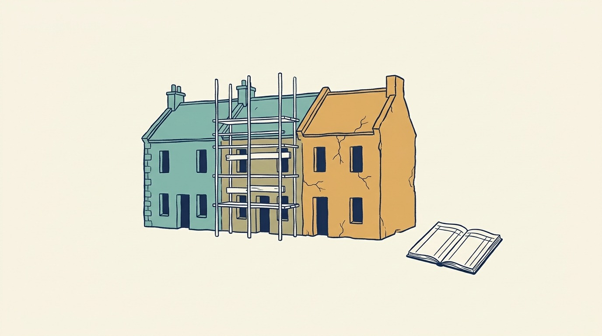

Part VI — SUSTAIN: Keep the Technology You Run Worth Its Cost
Manage Technical Debt: Fund the Fix by the Cost, the Risk and the Speed It Buys

Image generated by Google Gemini (gemini-3-pro-image-preview)
Part VI — SUSTAIN: Keep the Technology You Run Worth Its Cost

Image generated by Google Gemini (gemini-3-pro-image-preview)